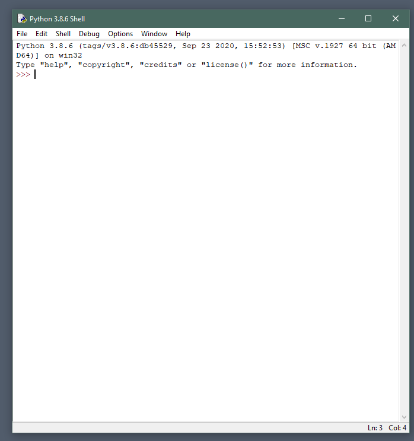

Lab 2: Math Operations, Datatypes, Conditional Logic
Learning Outcomes
In this lab, you will:
Perform math operations
Learn about more of the basic datatypes
Perform datatype conversions
Use comparison operators to compare numbers
Learn about using conditions
Introduction
In the last lab, we learned how to use builtin functions to print and to get input from the user. You may have noticed that what we can do with this input is so far very limited. In this lab we will explore some ways that we can with data.
2.1 Performing Math Operations
We will once again use Python’s builtin text editor called IDLE. Run that now. 
At the prompt, type 3 + 4 and press Enter. You should see the result printed below.
Let’s work with some variables now. Type x = 5. Remember to press Enter after each instruction.
Now type y = 6.
Now type result = x + y.
To see the value associated with our variable result, type print(result).
x, y, and result are all examples of the integer datatype. Integers are whole numbers, they have no fraction. Whenever you assign a variable with a number without quotes or a decimal, Python will automatically consider it an integer. Let’s introduce another basic datatype now.
Type the following: a = 3.0. This is a floating point number, or float. In Python, a float is any number that can contain decimals. In other words, a could equal 3.5.
Enter the following: a + y. You will see that the result is 9.0.
If you try a math operation using an integer and a float, Python will convert the int to a float and the result will be a float.
Enter 2 * 3. This is multiplication, and the result will be an int.
Enter 6 / 3. This is division. The result of division will always be a float. Python will intelligently perform conversions so that accuracy is preserved by default.
There is another type of division: 7 // 2. This is integer division, and it will always return a whole number.
Math Operators in Python
+
Addition
-
Subtraction
*
Multiplication
/
Division
**
Powers. eg: 23 = 8
//
Integer Division
%
Modulo. eg: When we divide 15 by 7, we get a result of 2 with a remainder of 1. Modulo will return the remainder.
TASK: Datatype Detection
You are writing an application for the college. Answer the following questions in a file called datatypes.txt and include it in your lab submission:
What datatype (string/integer/float) will you use for the following:
The student’s name?
The number of students in a class?
The student’s grade (as a percent)?
The student’s nine-digit ID number?
The total amount of tuitions paid by the student (in Canadian dollars)?
When answering these questions, consider also what types of processing you will be doing with these variables. Are they mathematical?
2.2 Debugging With Datatypes
As we have seen, usually Python will intelligently convert between integers and floats during calculations. Additionally, print() commands will often handle ints and floats without an issue, as we saw when we entered print(result). But this is not always the case.
Use the up arrow key to once again find and execute the print(result) instruction. Make sure that it is working and printing the number 11.
Now we will press the up arrow key and modify the print() command. We want to print “The result of our math is 11.” If you’ll remember from the last lab, the way we combine strings with variables is with the plus symbol.
You will see something like the screen below:
Note: This is an example of an exception. An exception is another way to say an error. Believe or not, exceptions are helpful! When the Python interpreter encounters an instruction that it finds ambiguous, it will often stop and request more input from the programmer. This is usually better than to continue doing something with strange effects.
When debugging code, always pay attention to the exception messages, and to to line numbers. When getting help from students or professors, always provide exception messages and line numbers where they occur.
The problem here is that + has two meanings. When + is between two strings, it will simply combine (or concatenate) them into one. When + is between ints or floats, it will perform a mathematical addition.
But the Python interpreter gets stuck when + is between a string and an int. Should it combine or add? And so, rather than potentially do the wrong thing, it halts and asks for clarification. Read the error message again and see if it makes sense. We cannot concatenate an int with a str.
2.3 Datatype Conversion
The solution to this issue is perform a conversion. We can convert result into a string using another builtin function called str(). This function will take an int or float and return a string (if possible).
Enter str(3). You should see it print '3'. The single quotes tell us that 3 is now a string.
Modify your print statement from before so that now it reads: print('The result of our math is ' + str(result) + '.'). Verify that you are getting the correct output now.
Datatype conversion is also important for doing the opposite: converting strings into integers. Note that the input() function will return strings. Keep that in mind as you complete the next task.
2.4 TASK: Summing Calculator
Create a script called lab2a.py. This should be in a “Lab 2” directory, create that now. Use either IDLE or VSCode to create the file.
Enter your name and MySeneca ID as comments.
Use an input() instruction to ask for the first number. Store this into a variable called user_num1.
Use another input() instruction to ask for a second number. Store this into another variable called user_num2.
Before trying to add these together, we will need to convert them into integers. The function to do this is called int(). To convert into floats, we would use float().
user_int1 =int(user_num1)
Do the same for user_num2.
Now you can perform the calculation. Create a new variable called result and it should equal the sum of your two integers.
Finally, print the result in the way we have shown. Notice that the final print statement should use user_num1, user_num2 and result coverted into a string.
Example Dialog
Enter the first number: 4
Enter the second number: 5
The result of 4 plus 5 is: 9
Include lab2a.py as part of your Lab 2 submission.
** Note:**
There is a dangerous edge case to be aware of in Python. Observe:
>>>> int(2.4)
2
>>>> int(2.5)
2
>>>> int(2.6)
2
int() will simply strip away any decimal values. In many cases, if you need to be more accurate, you should use the round() function:
Enter the following into your Python interpreter: 100 > 10. You should see it return True.
Now try reversing the logic: instead of using the greater than symbol, use <. You should now see it return False.
Comparison operators are useful in many contexts. They compare two numbers based on different criteria. True and False are new datatypes as well. Before demonstrating how we can use these, let’s be sure to include the types of comparisons that are possible in Python.
** Comparison Operators:**
>
greater than
<
less than
>=
greater than or equal to
<=
less than or equal to
==
equal to
!=
not equal to
2.6 If Conditions
If conditions are used to change a script’s behaviour based on circumstances. This usually means that we test a variable for a certain condition, and it that condition is true, perform an action.
if100>10:print('One hundred is larger than ten.')print('End of test.')
This produces the output:
One hundred is larger than ten.
End of test.
The first defines a condition. In this case, we are comparing two numbers. If this condition is true, Python will run every line below that is indented. And finally, every line without an indent is run normally.
Indentation In Python
Every programming language uses indents to make code more readable, but in Python this is particularly important. Indentation defines code blocks, which are sets of instructions that should be run together.
number = int(input('Enter 1 for odd numbers, and 2 for even numbers.'))
if number == 1:
print('1') # this is the first code block
print('3')
print('5')
print('7')
else:
print('2') # this is the second code block
print('4')
print('6')
print('8')
print('This is the end of the program.')
Please note that Python requires all indents to be consistent. Style guides require that each indent should be four spaces (ie, a soft tab). VSCode will do this for you automatically. If you mix spaces and hard tabs, or if your indents are mismatched, you will get an IndentationError.
For many other code editors, you can set the Tab key (⭾) to output four spaces. You will find instructions online on how to set this up.
2.7 If/Else
You probably noticed in the example above that we used an else line. This defines actions to take if our condition is False. So in summary:
If the user enters 1 as their input we run every instruction in the red block and skip the instructions in the blue block.
If the user enters 2 as their input we skip every instruction in the red block and run the instructions in the blue block.
The final print instruction runs no matter what.
2.8 Elif and Nested If
We are not restricted to only testing a variable for only one condition. By using elif after our initial if condition, we can introduce another condition to test. The important thing to remember with elif is that we will test each condition in sequence. If any test returns True, all other tests will be skipped.
Consider the example below. We understand from our experience in school that only one letter grade is assigned; if you have received an A then you haven’t also received a B, C or D. In addition, note that the sequence of these tests is important. If you placed grade >= 50 close to the top, then most student would be receiving a ‘D’ rather than an ‘A’. Feel free to re-organise this code and see how the behaviour changes.
grade =int(input('Please enter your grade as a percent between 0 and 100: '))if grade >=80:print('You get an A!')if grade >=90:print('Actually, you get an A+!!')elif grade >=70:print('You get a B!')elif grade >=60:print('You get a C!')elif grade >=50:print('You get a D!')else:print('Better luck next time!')
Some other important things to note:
By combining int() and input() we can make our code shorter and more readable. Function calls are similar to using parentheses in math:
(3 + 4) * 2 will equal 14 since the addition inside parentheses is calculated first. Similarly:
int(input()) the input function will return data from the user, which is then converted into an integer. Such combinations should be used sparingly. It’s extremely bad practice, for example, to perform a calculation and to print on the same line.
There is a nested if statement in this code. When grade is greater than 80, we will print You get an A! and then we will test the grade to see if it’s greater than 90. This grade >= 90 test only every happens when the first test is True. Note that the “A+” print message has an eight-space indent.
You can include many elif statements, and it’s good practice to include an else as a default action.
2.9 TASK: Tax Calculator
Defining The Customer’s Requirements
You join a meeting with your manager and a new client. This client wants you to create a simple program to calculate income tax. Your manager looks over at you and asks if you can do this.
It is at this point that you will need to talk to the client and define their requirements. The client probably has some idea of what they want, but they are probably not thinking in terms of algorithms, and we are (we must, because we are programmers!). By talking with the client, we can start to get specific rules for how this task will be accomplished:
If a taxpayer’s income is less than 32000, their tax rate is 10%.
If a taxpayer’s income is greater than or equal to 32000 but less than 64000, their tax rate is 15%.
If a taxpayer’s income is greater than or equal to 64000, their tax rate is 25%.
All taxpayers get a $10000 standard deduction.
For each dependent, a taxpayer gets an additional $2000 deduction.
If the calculated tax is a negative number, it should be recalculated to zero.
Apply the deductions first to decrease the taxable income, then use multiplication to apply the tax rate.
Required Input
Now we can start thinking about the data we will need to collect, and how. Right now, we only know how to prompt the user for manual input. What types of questions will we need to ask?
In the requirements, we can see that have different rules based on the user’s income and also their dependents. So we will need an input for both those pieces of information.
Also at this point we need to consider the variables we will need to create, and also how to handle input validation. What do we do when the input goes wrong? For example, the user enters their number of dependents as ‘blue’. Later we will discuss ways to handle these types of errors. For this task, assume that the user will always enter valid numbers.
Required Output
Usually the client has a good idea of how they want their final product to behave. It’s your job to translate requirements and input into a desired output.
Since this is a simple example, the client has expressed that it is fine to print the result to the terminal output. By discussing the output, we can talk about the program’s behaviour in a way that makes sense to everyone.
Enter your gross income: 46000
Enter the number of dependents: 2
The income tax is $4800.
Algorithm Design
Now that we have specified the requirements, we can go about designing our algorithm. We can use either pseudocode or a flow chart. We will discuss flow charts in the next lab, for now we will write each command in plain English.
Ask user for their income.
Ask user for their number of dependents.
if income is less than or equal to 32000, tax rate is 10%.
otherwise, if income is greater than 32000 but less than or equal to 64000, tax rate is 15%.
otherwise, it’s 25%.
deduction is 10000 plus 2000 for each dependent.
Subtract the deduction from income to get taxable income.
multiply taxable income by the tax rate to get result.
If the result is negative, total tax is zero.
Otherwise, the result is the total tax.
Print the result.
You should be able to see how each step can be translated into Python commands you already know. Also, notice that I am trying to identify each piece of information along the way: ‘tax rate’, ‘taxable income’, ‘result’, and so on. These will be my clues when I start defining variables.
In this way, we can separate the work of logical design from the work of translating logic into syntax. Programming is hard enough without the additional mental load of multi-tasking!
The Deliverable
This is usually the final negotiation with the client. The program needs to be delivered in a way that is satisfactory to the client. This step also includes providing training and documentation so that the client knows how to use your program correctly.
Name this script lab2b.py.
Use input() to query the user. Remember to convert to integers.
Put your math calculation on its own line. Use parentheses () in your calculation if needed. Don’t try to do math inside of a print statement, it will be harder to debug.
Use if statements to set to correct tax rate, and to handle negative numbers.
Test your code using the Sample output.
Include a Docstring, and in-line comments to explain how the program works. Remember to include comments in every script you submit from now on.
Include lab2b.py in your lab submission.
CHALLENGE TASK
This is our first challenge. These types of questions are meant to be harder to accomplish, but will be excellent practice for creating algorithms. In order to get full marks on the lab, you need to attempt this challenge, although you will not be penalised if your solution is incorrect.
Please read the instructions carefully, and avoid searching for solutions online. You won’t gain any marks for copying a solution, and you won’t gain the practice needed to succeed in the course.
Name this script challenge2.py.
Add your name and student ID as a docstring at the beginning of the script.
Use input to query the user for a decimal number. You can expect the user to enter a number between 0.0 and 0.9.
Without using the round() function, print the rounded integer for the number inputted by the user. For example: 0.4 = 0.
For each important calculation, be sure to use an in-line comment to explain your approach.
For extra challenge, your script should be able to handle any decimal number.
Deliverables
Use the check script to test your scripts. Submit: